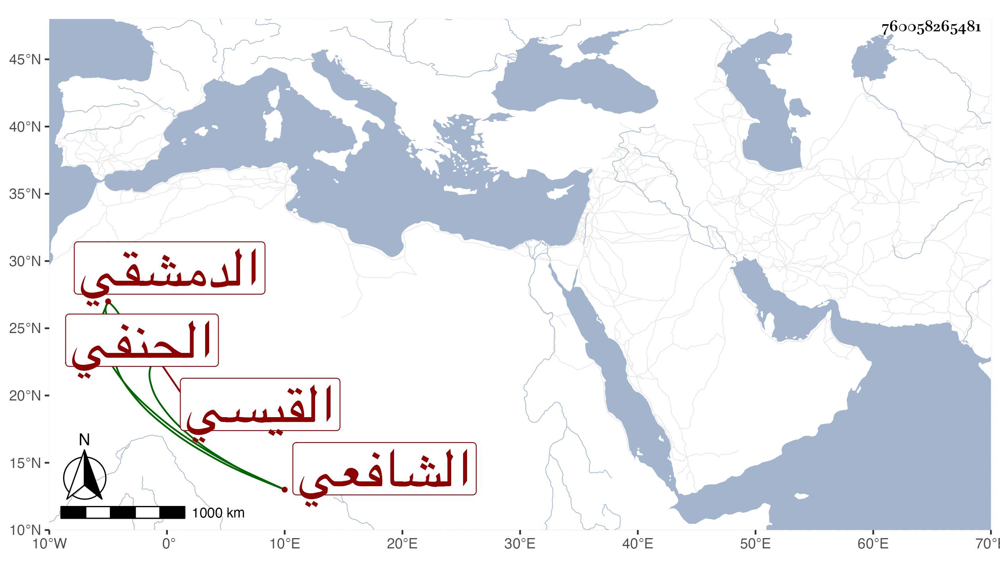

0902Sakhawi.DawLamic.ITO20230111-ara1.EIS1600.760058265481
Biography ID: 760058265481
480
عيسى بن أحمد بن عيسى بن عبد الكريم بن عساكر بن سعيد بن أحمد بن مكتوم الشرف أبو محمد القيسي الدمشقي الشافعي نزيل الصالحية وقريب التاج أحمد بن عبد القادر بن أحمد بن مكتوم القيسي الحنفي ، ويعرف كسلفه بابن مكتوم . ولد تقريبا سنة خمس وسبعين وسبعمائة وسمع من البدر حسن بن محمد بن أبي الفتح البعلي والكمال محمد بن محمد بن نصر الله بن النحاس مسلسلات التيمي وحدث بها سمعها منه الفضلاء ، وأجاز لي وخطه لا بأس به . مات قبل الستين ظنا .
